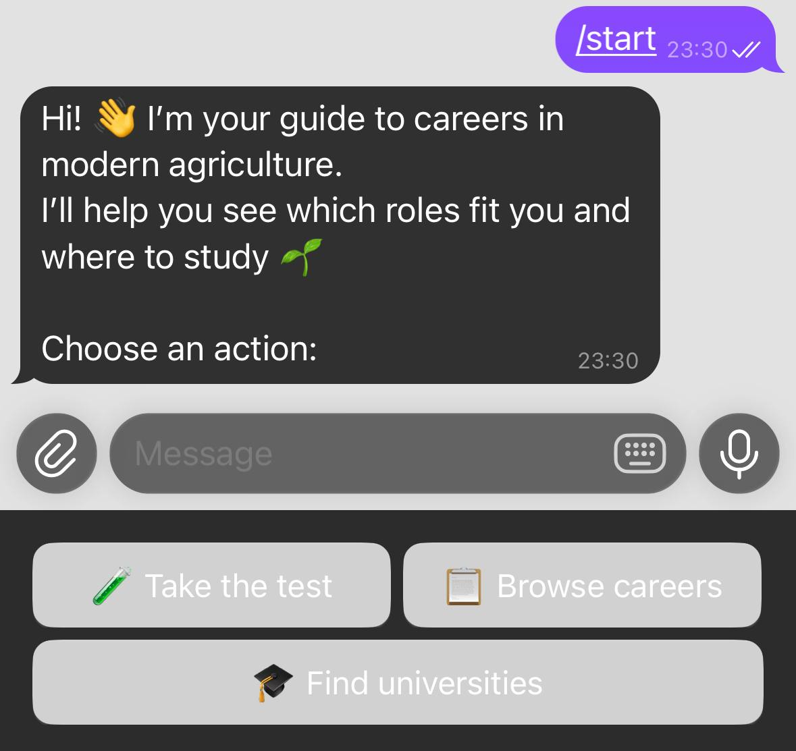
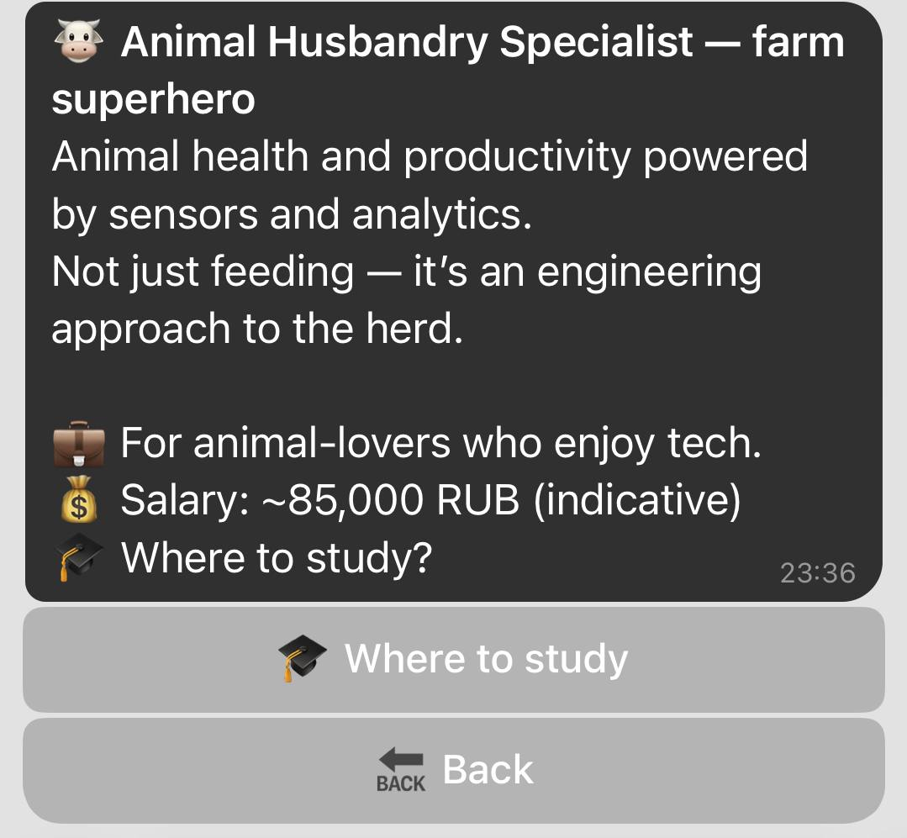
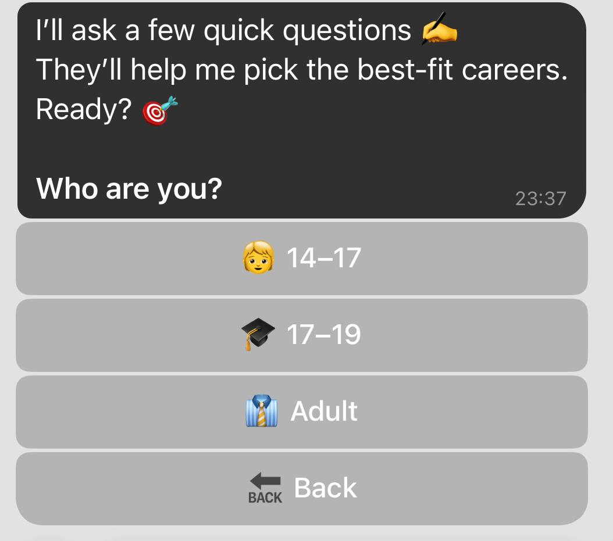
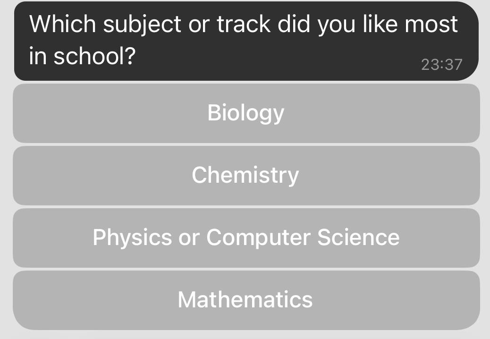
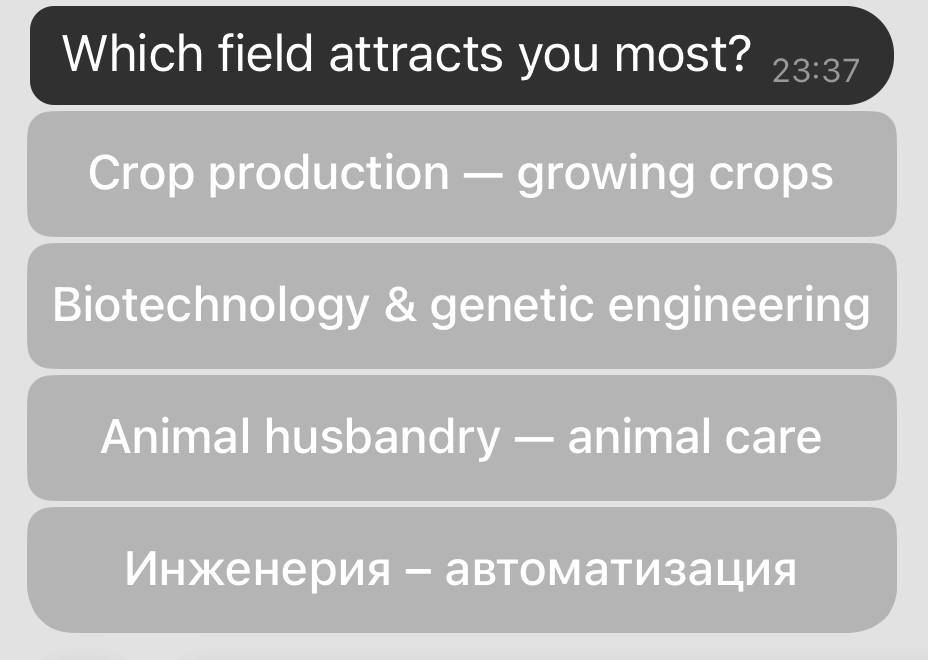
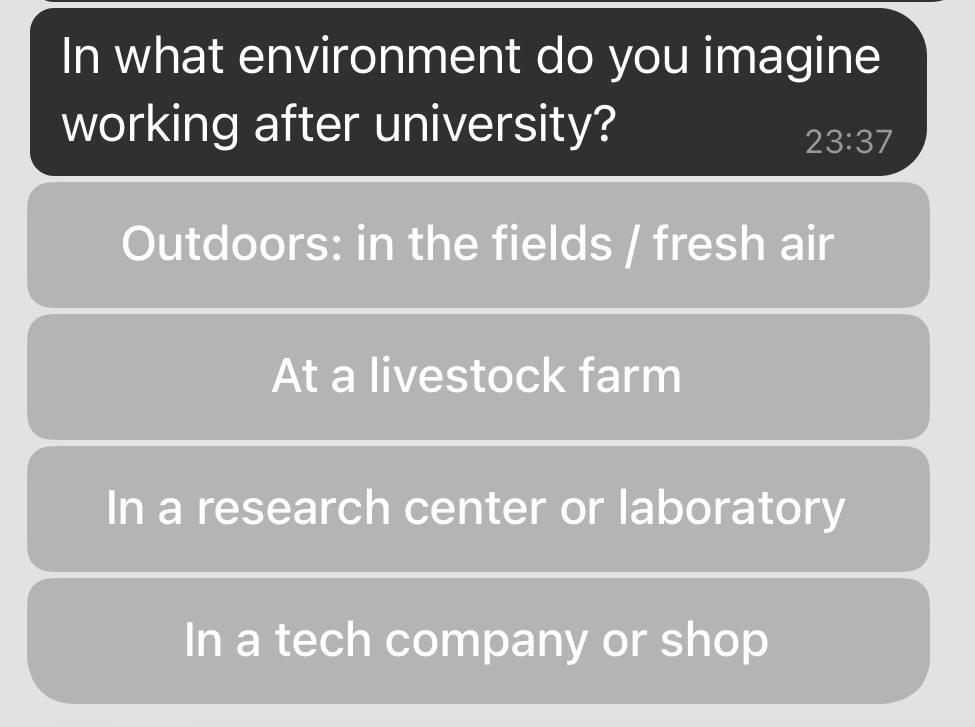
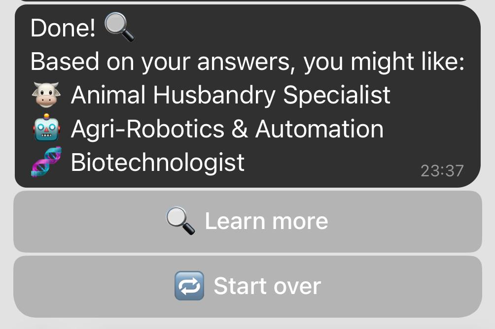
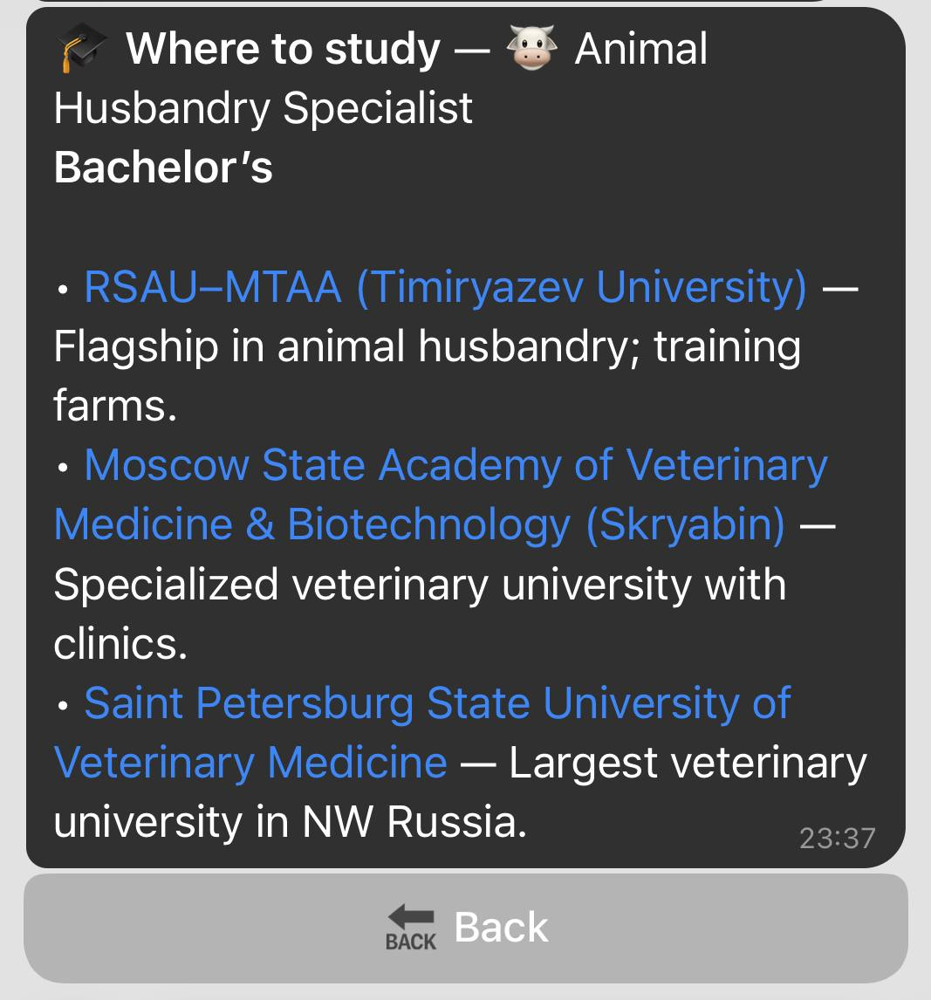

Тесты по специальностям, карточки с описанием, прохождение теста, рекомендации по результатам и список подходящих вузов. Дополнительно — вакансии или обучение.
Потенциальный покупатель: Минсельхоз, агрохолдинги, центры занятости, образовательные платформы для аграриев, рекрутинг в АПК.
Общий вид бота: приветствие и главное меню.Шаг 1. Главное меню и выбор теста по специальностям.Шаг 2. Карточка специальности с описанием.Дополнительный экран: список тестов или категорий.Прохождение теста: пример вопроса.Промежуточный или итоговый экран тестирования.Рекомендации по результатам теста.Шаг 3. Результаты теста и рекомендации.Шаг 4. Список подходящих вузов.Дополнительная информация: вакансии или обучение.